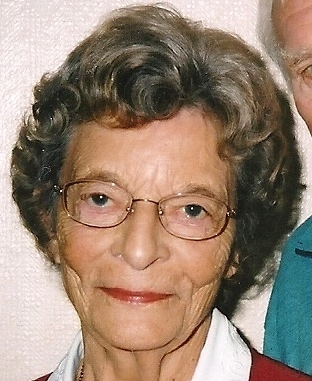
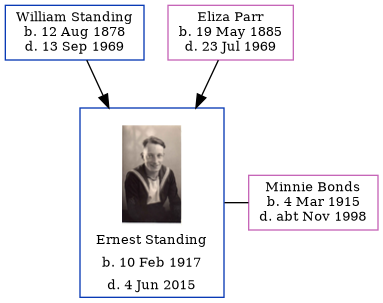

Muriel Alice Parker (née Standing) cAug 1921 - 2013
[ Home ] | [ Calendar ] | [ Surnames Index ] | [ Census Index ] | [ Family History ]The child of William Standing (a laundry man) and Eliza Parr, Muriel Standing, the fourth cousin once-removed on the father's side of Nigel Horne, was born in Romford, Essex, England c. Aug 19211,2. She married Leslie E J Parker in Ilford, Essex, England around Nov 19453 (Oct/Nov/Dec).
She died on Jan 30, 2013.
Parents
- William Ernest was born on Aug 12, 1878
- Eliza Mary was born on May 19, 1885
Citations
- England & Wales births 1837-2006 - Findmypast
- England & Wales, Birth Index: 1916-2005 Online publication - Provo, UT, USA: The Generations Network, Inc., 2008.Original data - General Register Office. England and Wales Civil Registration Indexes. London, England: General Register Office. © Crown copyright. Published by permission of the Cont
- England & Wales, Marriage Index: 1916-2005 Online publication - Provo, UT, USA: The Generations Network, Inc., 2009.Original data - General Register Office. England and Wales Civil Registration Indexes. London, England: General Register Office. © Crown copyright. Published by permission of the Cont
Media
Murien Alice Standing

England & Wales births 1837-2006 - BMD/B/1921/3/AZ/001429/011
England & Wales marriages 1837-2008 - BMD/M/1945/4/AZ/001390/006
Family Tree
Generated by ged2site. Last updated on Jun 11, 2024